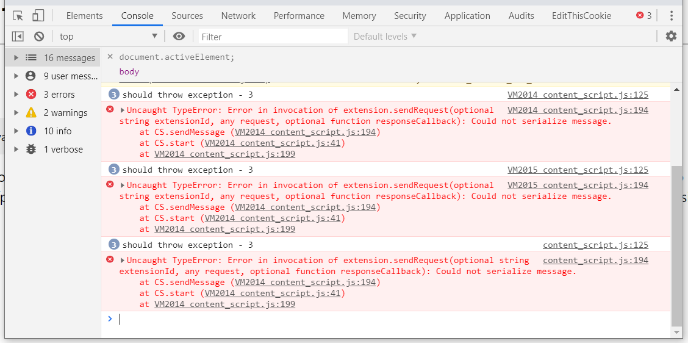

To je ale nadpis, takových zkratek, ale jde o Content-Security-Policy…
TL;DR verze U CSP jsou nové vlastnosti, jsou zrušené vlastnosti a je změna chování. Plus několik tipů co by se mohly hodit.
Aktualizace článku
trusted-typesse dočkal podpory v Chrome (od verze 83), takže přesouváme z "nepodporováno nikde" do seznamu… (naneštěstí) toho co není vdefault-src
ahá, však jasně, znám, to jsem si pročítal a udělal a hotovo.
Pokud je odpověď nějaká takováto, tak si zkontrolujte, kdy jste si tyto informace pořizovali, protože jako všechno na internetu : rychle se mění! Jsou tu novinky a jsou tam užitečné a logické věci a pak ty méně logické a problematické… no pojďme na to.
jo, slyšel jsem o tom, ale na webech nepoužívám, protože mě nepřišlo, že by to bylo k něčemu.
K něčemu to rozhodně je, neochrání to váš web před útoky typu XSS, respektive může, ale bylo by to security by obscurity, protože nejde o nepřekročitelnou obranu webu, maximálně tak obstrukce pro případného útočníka. Ale, může to ochránit uživatele vašeho webu, pokud má nějaké problémy se svým počítačem/prohlížečem. Například podvodný plugin, který se snaží trackovat uživatele, sbírat osobní údaje, měnit stránky, které si uživatel prochází a podobné nešvary. A CSP proto tomuto chování dokáže pomoct.
proč tenhle článek, když jsou dokumentace?
Nemám v úmyslu suplovat dokumentaci, například tu nevysvětluji ani jedenu z možných politik CPC natož vysvětlení možných hodnot. Místo toho je odkazuji na MDN kde jsou popsány moc pěkně. Případně samozřejmě oficiální dokumentace od W3C, která je ovšem dělena do modulů, takže musíte začít level 1, pak pokračovat na level 2 a možná ještě na working draft (ale už s podporou ve všech hlavních prohlížečích) level 3 a každý z levelů naneštěstí zruší něco z toho předchozího. Prostě na MDN je to srozumitelnější.
No a tady jsou ty špeky na co si dát pozor a začít z tohoto článku jako rozcestníku by vám mělo ušetřit mnoho času na samotném MDN a času testování.
Co je tedy nového
Jsou tu nové moduly, některé ještě ve stádiu návrhu, ale přesto už implementované v prohlížečích, jiné zatím na podporu ze strany prohlížečů čekají.
Dobré vědět je:
- že pomocí default-src nastavujete výchozí hodnotu jen pro některé vlastnosti, ne pro všechny, což je častá chyba ze strany webmasterů. Jsou to ty z level 1, později přidané level 2 a 3 tato direktiva neovlivní. Musíte je vypsat a nastavit samostatně. Je to škoda, že díky tomu bude tato hlavička zase více ukecaná ale co nám zbývá.
- frame-ancestors je obdoba staršího
X-Frame-Options, umožňuje nastavit zcela to samé a pokud používáte CSP a frame-ancesors nebudete jižX-Frame-Optionsvůbec potřebovat. Ostatně zápis pomocí CSP je o něco kratší a jestli vám jde o dobré hodnocení na https://securityheaders.com/ je to také v pohodě. Počítá s tím a hodnocení vám nesníží. - Špatná zpráva, jsme ve stádiu, kdy je report-uri už deprecated a bude nahrazené pomocí report-to, jenže FireFox (aktuálně ve verzi 74) zatím nepodporuje report-to, takže už je pak na zvážení jestli tam mít obě direktivy určené k tomu samému, jak deprecated report-uri, tak novou, ale ve FireFoxu zatím nepodporovanou report-to. Případně se na FireFox vykašlat a doufat že brzy přijde s podporou nové vlastnosti.
- CPS se nenastavuje pro doménu, nastavuje se individuálně pro každý resource stránky. Ať už dokument, css styl, nebo třeba obrázek. Samozřejmě význam to má právě hlavně u webových stránek, ale i tady si můžete pro každou stránku nastavit různé CPS podle toho co je potřeba. Téměř nikdo to ale nedělá, protože by to pak bylo značně pracné a přínosy jsou malé. Nastavit si to můžete třeba i pro obrázek, k čemu to pak je ? Například k tomu, že pluginy nebudou do prohlížečem vytvořené stránky pro zobrazení samostatného obrázku vkládat žádné další prvky. Například plugin co u samostatně zobrazeného obrázku vypíše jeho rozlišení to umí znefunkčnit, je to dobře? Těžko říct. Pokud se ale rozhodnete nastavovat CSP individuálně pro mnoho typů stránek mohlo by se to realizovat podle přípony souboru, příklad pro Nginx je o kousek níže.
- http/2 preload budete zbožňovat a možná i nenávidět. Totiž, když máte tu možnost http/2 preload používat, může vám ušetřit (objemově) slušné množství přenášených dat. Totiž když spojíte s stránku s příslušnými styly, javascripty a čímkoliv je třeba, budou se tyto zdroje přenášet společně se stránkou a tudíž bez http hlaviček. A to je ono, ušetříte data, nepřenáší se cookies, ani množství
CSPnebo šíleně dlouháfeature policyhlavička (tady je situace ještě horší než v případěCSPžádný default, všechno musít vypsat jedno po druhém, feature request existuje, tak snad časem… musíme doufat). No ale má to i nevýhody. Například když si pomocíCSPnastavíte, žejavascripty se provedou pouze, pokud majíintegrityanonce, toto nemůžete doplnit v http/2 preloadu (respektive integrity check doplnit jde, ale znovu tak narostou přenášené hlavičky), ovšem nanoncenení šance :( .

CC BY-SA 4.0
Narazíte na problém s rozšířením do prohlížečů… CSP je může na webu co CSP má pokazit, ale vadí to?
Sám jsem si vyzkoušel že mám v prohlížeči nějaký plugin, který do každé stránky vkládá nový font, no pomocí CPS jsem mu zavařil a vložení nového fontu znemožnil. Tohle může být výhoda (stránky se vykreslují rychleji a nejsou ovlivněny cizorodými prvky, které tam nezamýšlel webmaster), ale i nevýhoda (uživateli může přestat fungovat jeho oblíbený plugin na vašem webu, samozřejmě pluginy by ideálně neměli nic vkládat do webů samotných, ale určitě mohou být oprávněné důvody tohle dělat). Tohle si musí každý rozhodnout individuálně, ale co jsem mluvil s webmastery, tak většinou nemají moc pochopení pro uživatele s velkým množstvím pluginů, které se snaží ovlivnit vzhled a chování stránky. Webmaster to pak totiž nemá pod kontrolou a výsledek je pak nepředvídatelný. Navíc z praxe známe pluginy, které odesílají velké množství dat autorovi pluginu, případně mění nastavení reklam, analytics nebo nastavení affiliate odkazů, tak aby profit z toho neměl webmaster, ale autor pluginu. Takže vás, jako webmastera, tyto pluginy mohou připravit i o potenciální zisk z reklam či affiliate. Katalogy pluginů mají v podmínkách třeba zákaz měnit reklamy či analytické nástroje, ale znají většinou jen ty největší a často jim nějaký nekalý plugin proklouzne. Navíc ovlivňovat affiliate zakázáno není a díky velkému množství affiliate partnerů to ani nejde moc dobře automaticky kontrolovat a ty pluginy proklouznou.
No podívejme se už na všechny vlastnosti detailně
odkazy vedou všechny na MDN, není to sice oficiální dokumentace, ale zato to popsali velmi dobře a přehledně, co jsem ale zapsal jinak je rozdělení vlastností na ty, které spadají pod default-src a ty, které ne.
nejdůležitější ze všech:
v rámci default-src je těchto 16 vlastností, tyto tedy přebírají nastavení z default-src, ale je možné je přenastavit individuálně:
a teď pozor !!! co v default-src zahrnuto není a musíte tedy každou z nich nastavit samostatně, výchozí hodnotu pro ně není možné přebrat z žádné jiné direktivy:
ze seznamu jsem si dovolil vyřadit věci co jsou buď deprecated nebo nepodporované v žádném z prohlížečů, ale pro úplnost jsou zde:
referrer - deprecated & už nepodporováno nikde
navigate-to - nepodporováno nikde
prefetch-src - nepodporováno nikde
require-sri-for - obsolete
Jak to tedy nastavit, co je správně?
Univerzální odpověď není, doporučit mohu například nastavit všechno co možná nejvíce restriktivně a pak práva uvolňovat podle potřeby stránek.
Nedoporučuji nechat do stránky vstupovat jakékoliv zdroje, které nemáte pod kontrolou. Ano, máme tu sice Subresource Integrity, který pomocí kontrolního součtu zajišťuje, že se tělo zdroje vkládaného do html stránky nezměnilo. Ale to je právě ono, tělo. Nekontroluje to hlavičky, a pokud by vám někdo chtěl zavařit tak může pomocí hlavičky link, která umí vkládat do stránky CSS (pokud chcete vidět ukázku, tak tady, jen musíte mít Firefox) i Javascript (ovšem toliko specifikace, podpora je pouze ve FireFoxu) a nebo pomocí hlavičky HTTP/1.0 401 Authorization Required a WWW-Authenticate: Basic Což může vést k úniku hesla u méně zkušených uživatelů, ty zkušenější to bude jen otravovat.
Praktické zkušenosti z nasazení na Nginx
Nginx má výhodu v tom, že si můžete hlavičky dát do vlastních souborů a ty includeovat tam, kde jsou potřeba, zvláště pokud máte hlaviček moc a je to dlouhé, trošku to pomůže přehlednosti. Ukázka:
location / { include custom.headers.html.nginx; include custom.header.csp.html.nginx; location /cokoliv { set$value"something"; } location~* ^.+\.(css|ttf)$ { include custom.headers.staticFiles.nginx; include custom.section.cache.none.nginx; } location~* ^.+\.(jpe?g|gif|png)$ { add_header vary DPR; include custom.headers.staticFiles.nginx; include custom.section.cache.1year.nginx; } } Použije se nejlepší shoda, tedy například pro soubor s příponou .css se použije třetí location. Pro soubor s příponou .webp se pak použije už 1. location, protože není v posledním location společně s ostatními obrázkovými formáty. Tohle je myslím snadno pochopitelné. Teď přijde to záludnější. Hlavičky se nepřenášejí, pokud v daném location nastavuji hlavičky. Tedy například v location/cokoliv budou přítomny hlavičky z rodičovského location /, ovšem například v posledním location pro obrázky už tyto hlavičky přítomny nebudou, ani jediná, protože tam nastavuji hlavičky vlastní, i když se vzájemně nepřepisují. Prostě jakákoliv hlavička zruší všechny předchozí. A to je ten hlavní důvod, proč používat vlastní soubory a ty vkládat includem. Vaše CSP řetězce se pravděpodobně budou opakovat v různých location.
Zajímavé zdroje o CSP
- CSP Evaluator od Googlu vydoluje ze zadané URL adresy její CSP hlavičky a vyloží co která znamená a upozorní na potenciální bezpečnostní problémy
- Od sledování uživatelů skrze CSS ke Content Security Policy možný způsob sledování uživatelů vycházející ze samotných standardů html5 před kterým vás neochrání ani zákaz javascriptů
Článek budu pravidelně aktualizovat, podle toho, jak bude přibývat podpora v prohlížečích či nové standardy, případně jak se budou rušit staré vlastnosti. Pokud najdete v průběhu času nějakou nepřesnost budu rád, když mi dáte vědět, ať už jakýmkoliv způsobem.
Poslední aktualizace z: "Jun 2, 2020, 4:27:04 PM"
podle MDN : https://wiki.developer.mozilla.org/en-US/docs/Web/HTTP/CSP$history